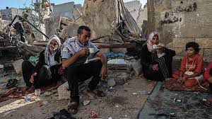

Principled shift: On India's stand on Gaza
Two months after Israel's bombardment of Gaza residents in retaliation for the October 7 terror attacks by Hamas began, India joined its voice to the global call to stop the bombing, voting in favour of a resolution at the UN General Assembly (UNGA) along with 152 other nations.
The resolution demanded an immediate humanitarian ceasefire, an observance of international humanitarian law, the unconditional release of all hostages, as well as “ensuring humanitarian access”.
India's vote was a shift from its previous vote at the last such UNGA resolution on October 27, when despite the death of 8,000 Gazans, India had decided to abstain from voting for a resolution that called for a ceasefire. The government and the MEA explained this to be a matter of principle, as part of India’s “zero-tolerance” approach towards terrorism, as the earlier resolution did not contain an “explicit condemnation” of the October 7 attacks. However, while the UNGA resolution passed on December 12 bears no direct mention of the terror attacks, India has voted in favour. Although the government has yet to detail the rationale, there could be several reasons: casualty figures have risen relentlessly, with 18,000 dead and the highest such toll of nearly 90 journalists. More than 80% of the entire population is homeless. Even the U.S., Israel’s biggest ally, estimates that nearly half of the 29,000 air-to-ground munitions deployed by Israel thus far are “unguided” or indiscriminate missiles. Second, Israeli Defence Forces have gone far beyond their original mandate of eliminating Hamas capacity and freeing the hostages to a large-scale flattening of Gaza and forced occupation of more territory. More than 100 Israeli hostages remain in Hamas custody. Third, global opinion, including Indian public opinion, has moved decidedly from sympathy with Israel, to horror at the unfolding aftermath, and New Delhi could not have been immune to entreaties by Palestine and the Gulf States to take a relook at its vote, even as India stood isolated in South Asia and the Global South for its previous abstention.
It may be too early to see India's UNGA vote as a reversal of its earlier position and a reversion to its original position in the conflict, where it has traditionally called for peace. Much will depend on the role India chooses for itself in ensuring the ceasefire is effected and holds, given that Israel has already rejected the UNGA resolution. Having proven its credentials as a friend to Israel following the terror attacks, as well as the odium of enabling the civilian deaths, the Modi government must be more vocal in helping the Netanyahu government out of the strategic cul de sac it has bombarded its way into, one which could cause regional instability and insecurity for decades.